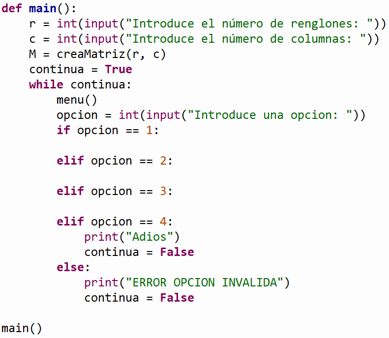

TC1028. Pensamiento computacional para ingeniería . |
|
|
|
. Descripción:
Objetivos:
Modalidad:

Instrucciones:
Ejemplo: Suponiendo que la matriz es de 4 renglones x 4 columnas y se le asignaron los siguientes valores aleatorios: 2 -5 6 -4
Ejemplo: Suponiendo que la matriz tiene asignados los siguientes valores, la matriz se imprimiría de la siguiente forma: 2 -5 6 -4
Ejemplo: Suponiendo que la matriz tiene asignados los siguientes valores: 2 -5 6 -4
La función regresaría: 11
Ejemplo: Suponiendo que la matriz tiene asignados los siguientes valores: 2 5 6 4
Al llamar multiplicaColumna(M, 1, 4) los nuevos valores en la matriz deberán ser: 2 20 6 4
Ejemplo: Suponiendo que la matriz tiene asignados los siguientes valores: 2 -5 6 -4
La función regresaría: 13
Ejemplo: Suponiendo que la matriz tiene asignados los siguientes valores: 2 -5 6 -4
La función regresaría: 10
1. Imprime

Ejemplo: Suponiendo que la matriz es de 4 renglones x 4 columnas y se le asignaron los siguientes valores aleatorios: 0 1 0
1
Ejemplo: Suponiendo que la matriz tiene asignados los siguientes valores, la matriz se imprimiría de la siguiente forma: 0 1 0
1
Ejemplo: Suponiendo que la matriz tiene asignados los siguientes valores: 0 1 0
1
Al llamar cambiaMatriz(M) los nuevos valores en la matriz podrían ser los siguientes: -5
1 6 1
Ejemplo: Suponiendo que la matriz tiene asignados los siguientes valores y el valor de x = 1: -5 1 6
1
La función regresaría: 8
-5 1 6
1
La función desplegaría: 2, 1
1. Imprime

Especificaciones de entrega:
|